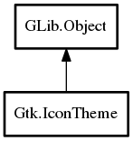

- IconTheme
- add_builtin_icon
- error_quark
- get_default
- get_for_screen
- IconTheme
- add_resource_path
- append_search_path
- choose_icon
- choose_icon_for_scale
- get_example_icon_name
- get_icon_sizes
- get_search_path
- has_icon
- list_contexts
- list_icons
- load_icon
- load_icon_for_scale
- load_surface
- lookup_by_gicon
- lookup_by_gicon_for_scale
- lookup_icon
- lookup_icon_for_scale
- prepend_search_path
- rescan_if_needed
- set_custom_theme
- set_screen
- set_search_path
- changed
IconTheme
Object Hierarchy:
Description:
Namespace: Gtk
Package: gtk+-3.0
Content:
Static methods:
- public static void add_builtin_icon (string icon_name, int size, Pixbuf pixbuf)
- public static Quark error_quark ()
- public static weak IconTheme get_default ()
- public static weak IconTheme get_for_screen (Screen screen)
Creation methods:
- public IconTheme ()
Methods:
- public void add_resource_path (string path)
- public void append_search_path (string path)
- public IconInfo? choose_icon (string[] icon_names, int size, IconLookupFlags flags)
- public IconInfo? choose_icon_for_scale (string[] icon_names, int size, int scale, IconLookupFlags flags)
- public string? get_example_icon_name ()
- public int[] get_icon_sizes (string icon_name)
- public void get_search_path (out string[] path)
- public bool has_icon (string icon_name)
- public List<string> list_contexts ()
- public List<string> list_icons (string? context)
- public Pixbuf? load_icon (string icon_name, int size, IconLookupFlags flags) throws Error
- public Pixbuf? load_icon_for_scale (string icon_name, int size, int scale, IconLookupFlags flags) throws Error
- public Surface? load_surface (string icon_name, int size, int scale, Window? for_window, IconLookupFlags flags) throws Error
- public IconInfo? lookup_by_gicon (Icon icon, int size, IconLookupFlags flags)
- public IconInfo? lookup_by_gicon_for_scale (Icon icon, int size, int scale, IconLookupFlags flags)
- public IconInfo? lookup_icon (string icon_name, int size, IconLookupFlags flags)
- public IconInfo? lookup_icon_for_scale (string icon_name, int size, int scale, IconLookupFlags flags)
- public void prepend_search_path (string path)
- public bool rescan_if_needed ()
- public void set_custom_theme (string theme_name)
- public void set_screen (Screen screen)
- public void set_search_path (string[] path)
Signals:
- public virtual signal void changed ()
Inherited Members:
All known members inherited from class GLib.Object